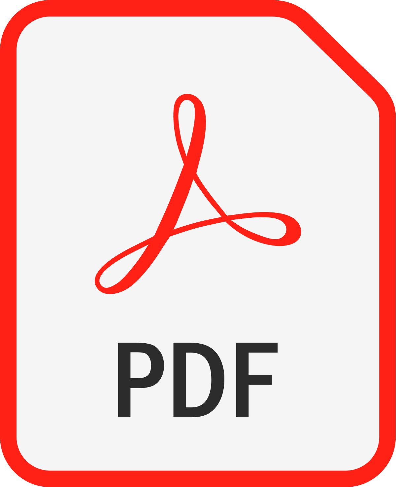

Pradhan Mantri Vaya Vandana Yojana (Plan No. 856, UIN : 512G336V01)
Pradhan Mantri Vaya Vandana Yojana (PMVVY) Scheme is a Guaranteed Pension Scheme of Government of India for senior citizen (60 years and above) available with Life Insurance Corporation (LIC) of India which provides guaranteed pension of 7.4% monthly and 7.66% yearly for 10 years. The deposited amount is returned to the policy holder after 10 years. Pradhan Mantri Vaya Vandana Yojana (PMVVY) modified -2020 (LIC Table No. 856) is modified version of earlier PMVVY (Table No. 842) which was closed on 31-03-2020. The earlier plan has been modified and made available for three more years up to 31-03-2023. This plan is available for purchase from 26-05-2020 from LIC.
In case of death during 10 years policy term, the purchase price will be returned to nominee of legal heirs of the policyholder and policy will get closed.
Policyholder will get guaranteed pension for 10 years. Pension will be available at the end of selected mode, for example, after a month in case of monthly mode.
After completion of 10 years, purchase price and last pension installment will be paid to the policyholder.
The policy can be surrendered in case of exceptional circumstances like treatment of any critical illness of the policyholder or spouse. Surrender value will be 98% of the purchase price.
Loan on this scheme is available after 3 years and maximum loan shall be 75% of the purchase price.
Brochure
